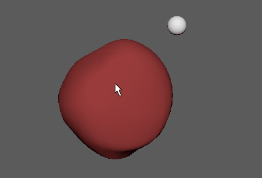

若要创建多边形上的点约束，请选择目标网格或该网格上的特定目标点，然后选择要约束到该目标的对象。

创建多边形上的点约束
- 选择目标网格，或者切换到组件模式以选择需要约束其他对象的特定顶点、边或面。
- 按住 Shift 键并选择要约束到网格的对象。
提示：
若要确保对象在预期的位置和方向上受约束，请对其枢轴点进行必要的调整，然后再将其约束到网格。（请参见更改枢轴点（位于手册的“基础知识”部分中）。）
- 在主菜单栏中，执行下列操作之一：
- 选择“约束 > 多边形上的点”(Constrain > Point on Poly)以使用默认选项创建约束。
- 选择“约束 > 多边形上的点”(Constrain > Point on Poly) >
 以在创建约束之前设置多边形上的点约束选项，然后继续执行以下步骤。
以在创建约束之前设置多边形上的点约束选项，然后继续执行以下步骤。
- 在“多边形上的点约束选项”(Point on Poly Constraint Options)中执行下列任一操作：
- 若要向动画层添加多边形上的点约束，请在“动画层”(Animation Layer)下拉菜单中选择所需的层。
- 单击“添加”(Add)或“应用”(Apply)以创建多边形上的点约束。
- 选择“编辑 > 保存设置”(Edit > Save Settings)可保存所设定的约束选项。
- 选择“编辑 > 重置设置”(Edit > Reset Settings)可重置为默认的约束选项。
如果选择了整个网格作为目标，那么创建约束时，受约束对象将移动到原点。然后，可以通过编辑约束属性中的 U 参数和 V 参数来调整其相对于目标网格的位置。请参见编辑多边形上的点约束属性。
如果选择了特定的顶点、面或边作为目标，那么创建约束时会将受约束对象放置在该点的精确 UV 坐标处。